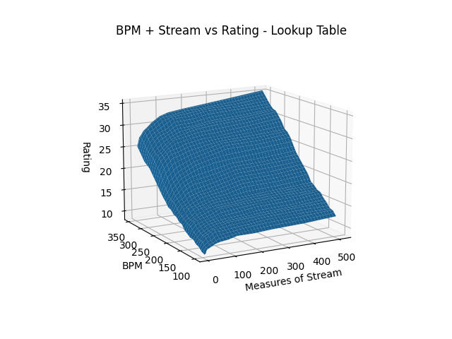
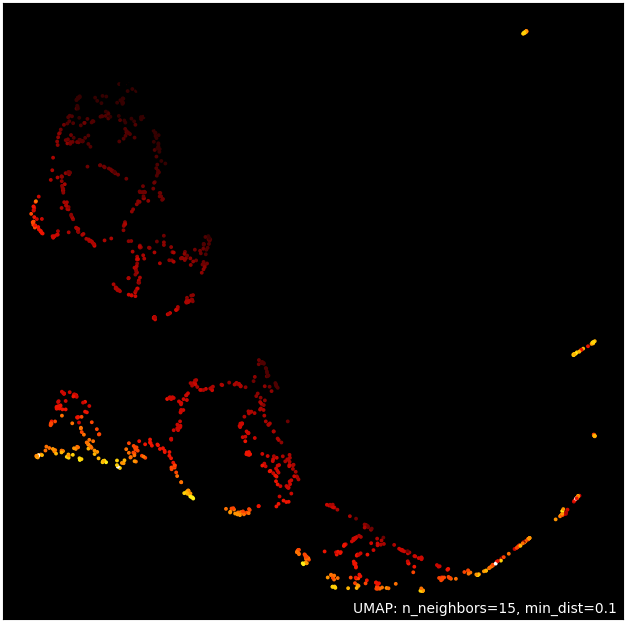
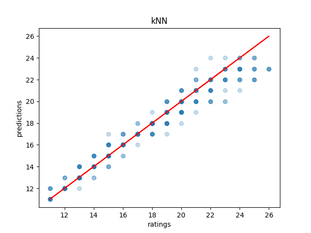
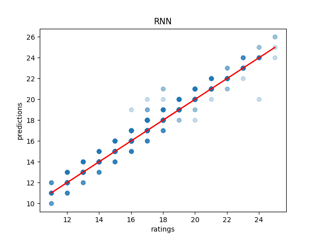
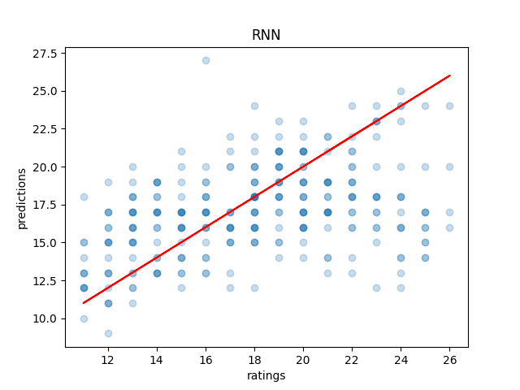
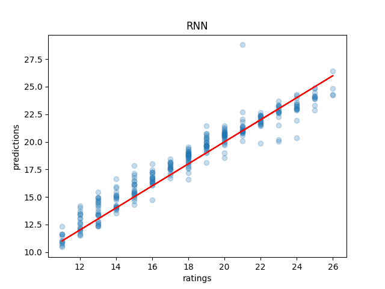

Auto-Rating ITG Stamina Charts with Machine Learning
Table of Contents
Abstract
I use machine learning to automatically rate ITG Stamina charts based on the "measure breakdown" commonly used as shorthand to describe charts. I use classical ML techniques and get fairly strong results, but I play around with sequence-to-one models anyways just for fun. I perform some visualization on how different features affect the rating, and suggest future directions this can go in. Code for this project can be found on github.
Introduction
I am a novice level ITG Stamina player. If you haven't heard of ITG Stamina, you can briefly refer to my post on it, or on Dom's youtube introduction to it. Basically, it's a 4 panel rhythm game where you have to hit a lot of notes with your feet very fast without stopping. Each song you play will have a stepchart, which is the "level" containing all of the arrows you have to hit to pass the song. Some of these stepcharts are harder than others, and you can arbitrarily change the speed of any stepchart to make it easier or harder (e.g. playing it on 1.5x speed).
The way these charts are rated is pretty arbitrary, and there are common complaints that the ratings don't make a lot of sense. Ratings are often pretty controversial, and charts get rerated all of the time based on people deciding they are too easy or too hard to be a certain rating. Generally speaking, though, rating charts is not that hard, and it's very rare for a chart to be misrated by an extreme amount (e.g. two block levels). Chart ratings are a bit like "V" grades in bouldering, where sometimes problems are a little hard or "soft" (i.e. easy) for their assigned grade, and the grades get more fuzzy as you get harder and harder, but generally the jump between grade to grade is pretty large.
What separates bouldering grades from stepchart grades is that bouldering is a judgment on the complicated-to-describe task of moving varied body types through a 3D environment with various moves, whereas stepcharts are easy to tokenize into sentence-long discriptions about what the "moves" are. This is because stamina players use something called breakdown notation in order to describe the difficulty of a chart.
The basic idea behind breakdown notation is that you can boil down any continuous stream of notes into how many measures long it is. No matter the speed of the song, if you have 10 measures of 16th note stream, you will have to hit exactly 160 notes in a row. This number is less useful for technical charts, where some patterns are much harder than others, but stamina charts specifically have all of these patterns removed.1 You'll often see charts described as something like "7-7-7/32 @ 160" which basically means "three 7 measure streams with small breaks between them, a long break, and a 32 measure stream, at 160 bpm". These breakdowns are often posted completely sans any other context and are usually enough for players to cross-check ratings with one another.
We would like to rate these somehow, automatically. How can we do that?
Getting Data
Breakdowns are relatively easy to get directly from a .sm file. The way Simply Love does breakdowns is very simple: if a measure has 16 notes in it, it's a stream2. For now we will proceed with that, and revisit this heuristic if there are too many songs with 24th/32nd note quantization which throw things off. I also trimmed out leading and trailing break (which shouldn't affect difficulty of the chart at all, since it is just break).
The gold standards for stamina charts are from the two main tournaments for stamina: East Coast Stamina, and Stamina RPG. Since there are some duplicates between these sets, just to make things somewhat easier, we assemble a relatively small dataset as follows:
Training: Stamina RPG 1-4
Validation: Stamina RPG 5
Test: Stamina RPG 6
Baselines
Lookup Table with Longest Stream
A very simple heuristic you can use is a table which describes the rating of a song with just one block of stream at a given bpm, and then using your chart's longest stream (or, alternatively, total number of stream). The logic for this is very simple; stream is the hardest part of the chart, so we can lower bound the difficulty by what it would be if the long stream would be by itself, and we can upper bound the difficulty by what it would be if there were no breaks.
This exists, and is a common first-order benchmark used by step artists when rating their charts. You can find it here. We can build a simple model which uses bilinear interpolation between cells of this table in order to predict a value. The main problem with this approach is that it gets worse the more information this description destroys. For example, 32@160 is probably not the same as 32-32-32-32-32-32-32@160. But for most charts, it's likely a fine benchmark.

Plotting this interpolation, it's definitely remarkably linear; I certainly expected this to produce something a lot more nonlinear.
Running some this on our SRPG5 set we get a result which makes sense: this serves as a pretty accurate bounds for the difficulty. Sometimes we hit it right on (when there's pretty much only one stream), and if we miss it's virtually always in the direction we expect (too low for longest stream, too high for total stream). In terms of accuracy, the total stream table seems a lot more accurate, but both are useful in their own specific way.

.png)
Classification w/ Length and Percent Stream
We can leverage our collected data and create a model which uses three features:
- Total number of measures of stream, excluding beginning and trailing breaks
- Total number of stream divided by total number of (trimmed) measures
- BPM
and then classifies a value based upon these three. This is still a pretty feature-engineery approach to the problem, but now we have three factors instead of two, and we are learning to predict with this, rather than using a table. The hope here, compared to the lookup table, is that percent stream as a third variable will allow us to encode some information about how much break is in the song, in hopes we can outperform the lookup table.

Above we have our training data projected onto two dimensions with umap3. It seems like there's some nice structure here with our features; higher rated songs are generally together, lower rated songs are generally together, etc. Seems like the ideal situation to use machine learning.
Note that the original lookup table approximates this solution (especially given that the last chart was so linear); if you look at the "slice" which consists of songs with just one block of stream (e.g. Oceanlab Megamix), such that percent stream is 1.0, it should pretty much be the same thing as the above.
Running this on our SRPG5 set, we see that Linear Regression it scores exactly the same as the Sum of Total Stream version of the interpolated lookup table (38.28%), with marginally lower mean absolute error (0.68 vs 0.70). Some of the more moderately sophisticated models do outperform the lookup table by a fairly decent margin: the most successful of which seems to be Support Vector Machines (53.7% accuracy, 0.51 Mean Absolute Error), although k-nearest neighbors comes close also (53.1% accuracy, 0.60 Mean Absolute Error). Generally speaking, these models will either get it right or be off by one block.



This isn't bad; it's certainly usable. However, I think we can do better. More importantly, I think we can use a much cooler technique than any of the ones above, so we (I) can learn to use that technique in the future (the real motive here).
Sequence Models
What we would like is to take a stepchart, find its breakdown, and directly infer the difficulty based upon the breakdown and bpm. However, unlike the baseline problems, we recognize there is a problem: the breakdowns can by any length, which doesn't play nice with our more standard neural networks which want an input which is a fixed size.
The solution here is to use a sequence model, which can take a variable length input! Well, maybe that's a bit of a misnomer, since you need to pad the sequence anyways, but the important thing is that it is a problem dealing with a sequence, rather than values of a specific set of features.
Recurrent Neural Network (RNN)
I build a simple RNN in pytorch on the above problem, feed it breakdowns, and penalize it based on Mean Squared Error loss. Out of the box, it appears to learn quite well! Just look at this 79% accurate model (when testing on the training data)

However, what is actually happening is that we are horribly overfitting to our training data, which is actually quite small for a machine learning dataset. On the validation set, we instead see the sad reality: our accuracy is actually more like 11%.

I switched to a more direct implementation of RNNs instead of using the shipped-in-pytorch nn.LSTM, since it doesn't really feel like we need the long-range dependency anyways. If we think about how a chart works, it feels like the hidden state should contain all the information about the chart4. It's not possible for more notes later to make a chart easier, and blocks of stream don't really interact in any way with other blocks of stream.

That's more like it! It's clearly learned something which generalizes to the validation set! Funnily enough this doesn't manage to outperform SVM / kNN on our hand-reduced features, clocking in at around 47% accuracy and 0.79 mean absolute error. But, it is fairly competitive, and it got there directly from the measure breakdowns. How cool is that!
Discussion
Ultimately, if you want something quick and easy, the Support Vector Classifier is a pretty safe choice. It performs well, it's rarely off by more than a block level, and it doesn't require substantial computational power. If you want to get a rating estimate, and you don't want to bother someone about it, it's a good pick. If people want to play with this, I could probably try serving the model in a browser or something.
As fun as it was to fit a recurrent neural network to this problem, it does seem a bit overkill for this problem. Classical techniques work well on this for stamina in particular, and although it's interesting that you can get competitive results with the RNN, I think the problem is actually too linear to beat the more directly linear techniques.
There's some fun potential for this for stamina players. It's possible this could be included in the stats portion of simply love (alongside breakdown, percent stream, etc), and a regression version of this could be used to give a very loose metric of "hard 15" vs "easy 15". I know games like jubeat do this, where charts within a certain level above 9 are marked as, for example, 10.9 instead of just as 10. This is probably most useful for players who use rate mods, since it's not always immediately clear how x1.2 bpm would affect the rating of the chart, and a quick reference point would be pretty useful.
I am not advocating for these models to replace human raters; especially given that the grades are determined based upon the "flags" planted in the game's history based around the first players to ever reach a new block level. It's possible these flags don't make a lot of sense, and that certain charts throughout the game's history may or may not have been misrated. That said, "difficulty block" is a subjective concept, and whether that concept ought to scale linearly, logarathmically, exponentially, or with any other (even potentially nonlinear) function is a decision which can only be made insofar as it represents what the concept means – how hard something is for a human.
That is to say, it might appear to a model fitting a function on top of the data that a 5 bpm increase to the hardest chart ever made would not constitute a new block level, but if that 5 bpm increase represents a significant tax upon what is humanly possible, what the model thinks is largely irrelevant.
That all being said, the lower block levels are a subjective concept with lots and lots of prior examples, and even just the ability to quickly and easily call forth charts with similar breakdowns to your chart should be an immense benefit to stepartists who are unsure about ratings. It benefits everyone to be able to say something like "this has pretty much the same breakdown as Eyes of Sky, but it's a little faster" without needing to memorize hundreds of chart breakdowns (kNN would be good for this).
Anyone interested in future work for this problem could look towards automatically rating tech charts, which are much harder to rate since the patterns vary in difficulty much, much more. It's all ultimately sort of the same deal, you would just have to give a sequence model the entire sequence of notes directly (and probably would require way more data), but compared to stamina the rating output space is much narrower (I think it only goes up to 14). Definitely something to try!
Anyone interested in doing this, but in a way sillier way, should consider just dumping all of the data into a large language model and seeing if it can do it. While it's not really an NLP task, it is a sequence task, and I would be really interested to see if LLMs could somehow fit a function on top of a sequence of numbers.
Footnotes:
"Patterns do not affect difficulty" is something oft-repeated among stamina players. I'm not sure how much of a meme this is; there are far too many stamina memes for me to really follow as a lowly 180|14 player, but for the purposes of explaining breakdowns it should be fine.
Something to note here is that Stamina RPG calculates these slightly differently, and that this method will "erroneously" count something as stream if, for example, it has a burst and then a short break. This is close enough to the same difficulty as a measure of stream (probably even harder) for me to not care, but it is a nuance which should go mentioned somewhere.
https://umap-learn.readthedocs.io/en/latest/index.html - It probably would have made sense to do a 3d scatter plot with colors denoting rating, since we only have 4 dimensions. For a "real" project I would porobably have done so, but I think umap looks cooler and still visually communicates that higher rated songs are similarly grouped with our features.
There's an analogy to be made here to the markov property